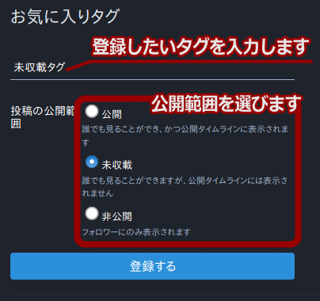
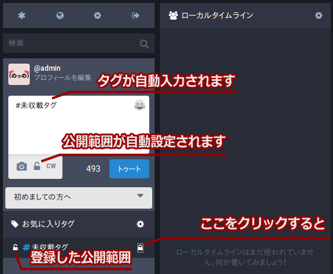

お気に入りタグと実況
使い方
未収載タグ付き投稿のタグTLへの表示


お気に入りタグ機能
登録画面への行きかた

タグの登録のしかた

タグの自動入力のしかた

※複数のタグを同時に自動入力することもできます
(公開範囲はより狭いほうに設定されます)

未収載で登録したタグであっても手動で公開範囲を設定しなおすことはできますので、「普段は未収載でやってるけど、たまにローカルTLで宣伝したいな」というときには公開範囲を手動で公開(public)にすればローカルTLに表示することができます。
「配慮してください」との口実で自分以外の人に対して何かを”強制”することは認められません。
親しい間柄で行われる”注意”との境界線は難しいものがあり一概には言えませんが、”強制”との線引きはしましょう。
難しい場合には改定した投稿ガイドラインにも書いてありますようにまずは通報、どうしても相容れない場合にはミュート、ブロックにて対処していただけますようお願いします。
もし、アイマストドンにこんな機能があったらいいのにという要望や不満、操作がわからないなど困ったことがありましたら、 @fusagiko か、または @imastodon にメッセージを送ってください。他の人に見られたくない場合には、公開範囲をダイレクトメッセージに設定すれば管理人にのみ届きます。
参照： im@stodon 投稿ガイド
アイマストドンは今のところ主にローカルTLにおいて会話が交わされるような使い方がされています。
そして、アイマストドンのベースになっている本家マストドンでは、未収載より狭い公開範囲のタグ付き投稿はタグTLには出ない仕組みになっていました。
そのような状況下で、アイマス曲でDJをする方やそれを聴く方が使う「#imas_dj」、各種アイマス系ラジオやニコ生の実況が行われる「#デレラジ」や「#デレパ」、「#SideM」などのタグを用いての実況が行われると、ローカルTLがそれらの投稿のみで埋め尽くされてしまい、他の話題を話すことが出来ないという状況が見られ、またそれらに対する不満の声がありました。
この問題についてどうすれば実況がしたい人も実況以外のことを話したい人も我慢をすることなく、技術および仕組みで解決することが出来るのかを考えた結果が、未収載タグ付き投稿のタグTLへの表示と、お気に入りタグ機能、そしてお気に入りタグの公開範囲設定機能です。
みなさんが楽しくアイマストドンを使ってくださることを願っています。